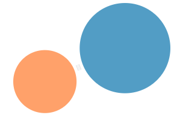
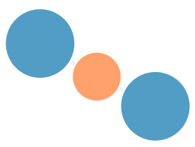
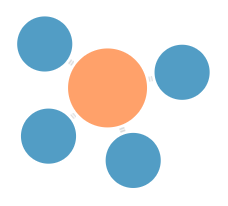
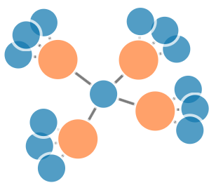

Graphe des relations virtuelles
Un homme qui discute avec une femme sur un site de rencontres est en droit de se demander : i) si la femme discute en même temps avec d’autres hommes et ii) si oui, avec combien d’hommes à la fois, et quels hommes lui font concurrence. Le graphe suivant fournit une ébauche de réponse à ces interrogations. Il est produit à partir du profil de 300 hommes et de leurs relations.
Cliquez sur les noeuds après vous être connecté au site pour voir le profil d’un célibataire.
Ouvrir en plein écran
Un noeud correspond à un célibataire (ou à un individu en couple libre...). Les arêtes montrent des échanges de messages entre deux individus. Ce graphe étant plutôt chargé, on se propose pour simplifier l’analyse de le disséquer en sous-graphes pertinents.
Les hommes qui n'ont pas d'échange
| Certains hommes ne conversent avec personne. Peut-être parce qu'ils viennent d'arriver et n'ont pas eu le temps d’entamer une discussion. Ou peut-être sont-ils trop timides, ou trop exigeants. Ces internautes représentent 1/xème de la population masculine. Pour eux, payer un abonnement n’est pas rentable car ils ne profitent pas des fonctionnalités du site. |
Les hommes qui parlent avec une unique femme
| Les hommes qui ne parlent qu’à une seule femme à la fois se font rares. La plupart ont plusieurs pistes en cours. Les individus ci-contre sont peut-être des âmes-soeurs, autant assorties que les chaussettes d'une paire. Ou peut-être correspondent-ils à des profils marginaux, par exemple, deux nains roux qui se seraient trouvés ? |
Les hommes qui parlent avec plus d'une femme
| Il apparaît que les hommes discutent en moyenne avec 4 femmes ! De plus, notons qu’AdopteUnMec masque le nombre de contacts que peut avoir un homme lorsque celui-ci est supérieur à 4. Cela afin d’empêcher une réputation de « coureur », laquelle pourrait freiner d’éventuelles nouvelles intéressées (hypothèse). Potentiellement, certains hommes jonglent de front avec 5, 6 voire une dizaine de conversations en parallèle. |
Ouvrir en plein écran |
Les femmes qui parlent avec un unique homme
| Contrairement aux hommes, les femmes semblent préférer gérer une discussion à la fois. Elles se concentrent en effet principalement dans ce graphe... |
Ouvrir en plein écran |
Les femmes qui parlent avec plusieurs hommes
| ...et sont relativement peu représentées dans ce dernier graphe. On pourrait un peu rapidement conclure que les hommes préfèrent la quantité là où les femmes sont plus orientées qualité. |
Ouvrir en plein écran |
Quelques pattern remarquables...
|  |  |  |  |
| Monopole temporaire Quand un homme a l'exlusivité totale d'une conversation avec une internaute. |
Triangle amoureux Quand deux hommes se disputent (sans le savoir) une femme...ou l'inverse. |
Harem local Quand un homme converse seul avec 4 femmes ou plus. |
Femme populaire Quand une femme est le dénominateur commun aux relations de plusieurs hommes. |
Remarque finale : ces graphes sont valables à l’instant où il ont été produits. Si les relations évoluent, il faut relancer le notebook pour en obtenir une vue actualisée.